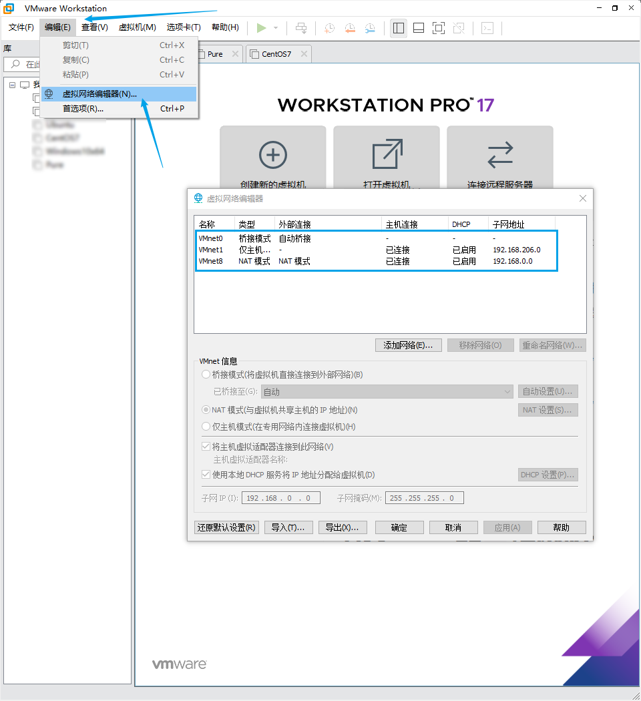
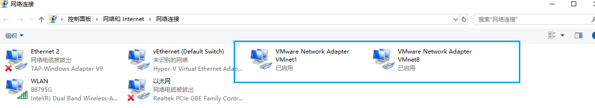
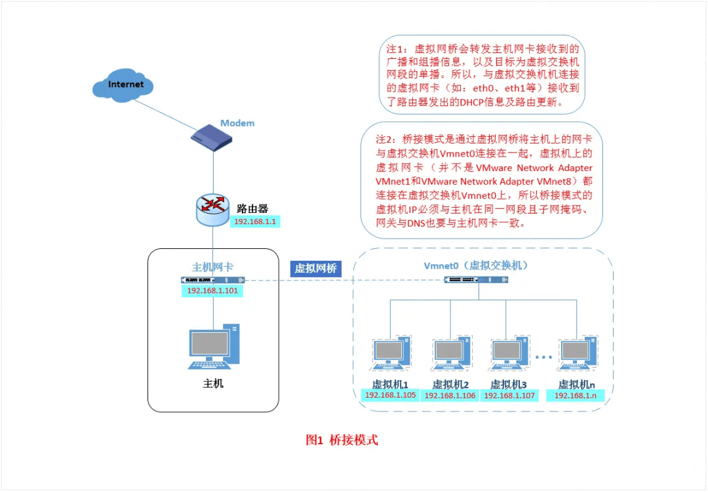
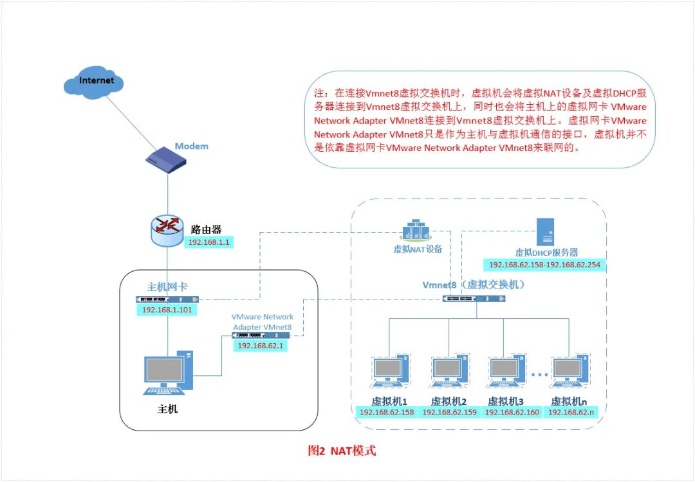
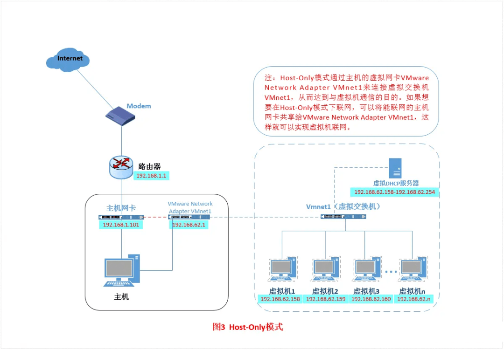

VMware虚拟机的三种网络模式

文章目录
在安装 VMware 之后，宿主机和VMware上会出现几个相关的虚拟设备，每个设备的功能如下：
- VMnet0：桥接（Bridge）模式下的虚拟交换机。
- VMnet1：仅主机（Host-only）模式下的虚拟交换机。
- VMnet8：NAT 模式下的虚拟交换机。
- VMware Network Adapter VMnet1：宿主机与 Host-only 虚拟网络进行通信的虚拟网卡。
- VMware Network Adapter VMnet8：宿主机与 NAT 虚拟网络进行通信的虚拟网卡。
VMware的三种网络连接方式
VMware 的虚拟机有三种网络连接方式，分别是桥接（Bridged）模式、NAT 模式和仅主机（Host-only）模式。
模式配置可以在虚拟机左上角“编辑——虚拟网络编辑器”中设置，如下图：

可以看到三种不同模式对应的状态，其中VMnet1，VMnet8的IP都是随机分配的，如果想要重新设置，或者在主机上看不到对应的VMnet1，VMnet8虚拟网卡，只需要点击左下角的恢复默认设置，即可看到虚拟机中这两个方式IP变了的同时，主机上的虚拟网卡也更新了。
主机查看虚拟网卡设置可以到网络连接：

从上面可以看出，主机是没有桥接模式对应的VMnet0虚拟网卡的。
下面介绍三种方式的区别
bridged（桥接模式）
在桥接模式下，使用 VMware 创建的虚拟机就像是你买了一台新主机接到了局域网的交换机或者路由器上。它可以配置IP地址、子网掩码和其它的 TCP/IP 信息，同时它也可以访问局域网内任何一台机器。
结构图如下：

其实在网络层面，完全可以把桥接模式的虚拟机看做是与宿主机具有同等地位的两台电脑。只要将虚拟机的 IP 地址、子网掩码配置成与宿主机同一网段，那么二者就可以进行通信。
桥接模式的使用很简单，只要将虚拟机配置为桥接模式，然后将其 IP 地址配置到与宿主机同一网段（即地址前三个数相同）即可正常工作。
优先使用桥接模式的场景：
- 局域网中的 IP 地址足够，并且局域网内的其他设备需要访问虚拟机。
NAT（地址转换模式）
NAT 模式就是让虚拟机借助 NAT （网络地址转换）功能，通过宿主机来访问外部网络。
在 NAT 模式下，虚拟机与宿主机的关系就像是孩子与监管很严格的父亲之间的关系。孩子想要和外面的人交流，需要先告诉父亲，然后由父亲转达。外面的人想和孩子交流，也需要先告诉父亲，然后由父亲转达给孩子。虚拟机想要访问网络，需要经过宿主机代劳。在外部设备看来，是宿主机提出了网络请求，所以将网络数据返回给了宿主机。宿主机收到数据之后，转发给虚拟机。
结构图如下：

NAT 模式下，宿主机之外的网络设备是看不到虚拟机的存在的。 如果外部设备（例如嵌入式 Linux 开发板等）想要访问虚拟机怎么办？这就需要配置 VMware 的“虚拟网络编辑器”配置端口映射，将宿主机的网络端口与虚拟机的网络端口进行映射。外部设备访问宿主机映射之后的端口就可以实现对虚拟机的访问。
NAT 模式下的虚拟系统的 TCP/IP 配置信息是由 VMnet8(NAT) 虚拟网络的 DHCP 服务器提供的，无法进行手工修改。如果只是要求虚拟机能够访问外部网络而不需要外部设备访问虚拟机，那用 NAT 模式比较方便。如果需要外部设备访问虚拟机，在 IP 地址足够的情况下，不如使用桥接模式方便。毕竟，配置端口映射也挺麻烦。
优先使用 NAT 模式的场景：
- 场景1：局域网中的 IP 地址紧张，不能给虚拟机分配单独的 IP 地址。
- 场景2：只需要虚拟机访问外部网络，不需要外部设备访问虚拟机。
Host-Only（仅主机模式）
在有些情况下，我们需要将虚拟机所在的网络环境与宿主机所在的网络环境进行隔离，这个时候就可以采用 Host-only 模式。
在 Host-only 模式下：
- 所有的虚拟机之间可以相互通信
- 虚拟机与宿主机之间可以相同通信，类似于将二者通过双绞线互连。
- 虚拟机与宿主机所在局域网中的其它设备之间不能通信。
在 Host-only 模式下，虚拟系统的 TCP/IP 配置信息(如 IP 地址、网关地址、DNS 服务器等)，都是由 VMnet1 (host-only) 虚拟网络的 DHCP 服务器来动态分配的。
这种模式可以把 VMnet1 想象成一个路由器，它为所有连接上的虚拟机分配 IP 地址。宿主机也通过 VMware Network Adapter VMnet1 虚拟网卡连接到 VMnet1 上，所以也会得到一个 IP 地址。VMnet1 管理下的所有机器（虚拟机、宿主机）之间可以正常通信。
除了 VMware Network Adapter VMnet1 虚拟网卡之外，宿主机还会有物理网卡，并通过物理网卡连接到了现实中的交换机或者路由器上。物理网卡所在的网络和 VMware Network Adapter VMnet1 虚拟网卡所在的网络之间是完全隔离的，所以物理局域网内的其他设备和 VMnet1 管理下的虚拟机之间无法通信。
结构图如下：

优先使用 Host-only 模式的场景：
- VMware 虚拟机与物理局域网内的其他设备需要进行网络隔离。
文章作者 Pure3417
上次更新 2023-02-24